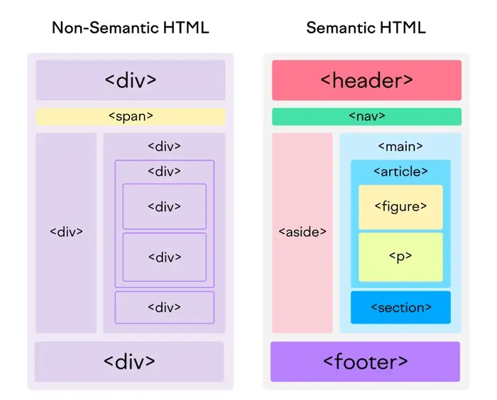

Módulo 1 - Primeiros Passos com HTML
Índice
Introdução ao HTML na prática
Início
HTML (Linguagem de Marcação de Hipertexto) é a base para a construção de páginas web.
Ele define a estrutura e o
conteúdo de um site, utilizando tags para organizar elementos como texto, imagens e links. Aprender HTML na
prática envolve entender a sintaxe das tags e como elas interagem para criar a estrutura de um documento web.
As partes principais do elemento são:
Tag de abertura: Consiste no nome do elemento, envolvido entre parênteses angulares de
abertura e fechamento. Isso indica onde o elemento começa, ou inicia a produzir efeito — neste caso, onde o
parágrafo se inicia.
Tag de fechamento: É o mesmo que a tag de abertura, exceto que este inclui uma barra
diagonal antes do nome do
elemento. Indica onde o elemento termina — neste caso, onde fica o fim do parágrafo. Falhar em incluir o
fechamento de uma tag é um erro comum para iniciantes e pode levar a resultados estranhos.
O conteúdo: Este é o conteúdo do elemento, que neste caso é somente texto.
O elemento: A tag de abertura, mais a tag de fechamento, mais o conteúdo, é igual ao
elemento.
Tags HTML: quais são as mais comuns e como identificá-las
Entender o que é e como funciona cada tag HTML é uma etapa essencial para implementá-las corretamente no código
HTML do seu próprio site.
O que são tags HTML?
Tags HTML são instruções que informam ao navegador como formatar o texto. Você pode usar tags para definir
itálico, quebras de linha, objetos, bullet points e muito mais.
Essas tags estão presentes no HTML (Hypertext Markup Language) de todas as páginas da internet.
Como as páginas leem as tags HTML?
Os servidores leem o código HTML para entender e renderizar o conteúdo corretamente. Essa leitura é feita de
cima para baixo, da mesma forma que você está lendo este artigo agora.
Você pode usar quantas tags quiser para formatar o conteúdo. No entanto, existem algumas regras essenciais sobre
tags HTML que você precisará seguir.
Uma tag HTML deve conter três partes:
- Uma tag de abertura — começando com um símbolo (<);< /li>
- Conteúdo — instruções curtas para exibir o elemento na página;
- Uma tag de fechamento — terminando com um símbolo .
Algumas tags HTML podem ser abertas. Isso significa que elas não precisam ser fechadas com . Essas tags são
normalmente usadas para metadados ou quebras de linha.
Qual é a diferença entre elementos, atributos e tags HTML?
Um elemento HTML é um item da página; faz parte do conteúdo dela. Uma tag HTML altera a maneira esse elemento
aparece. Já um atributo HTML descreve as características desse elemento. Veja como elementos, tags e atributos
funcionam juntos:
- Tags HTML contêm instruções para exibir um elemento na página. Elas começam com um < e terminam com um>.
(Por exemplo: <b> Marca em negrito </b>)
- Elementos HTML são o conteúdo da página inserido nas tags. (<b> Marca em negrito </b>)
- Atributos HTML fornecem informações adicionais sobre os elementos e aparecem na tag. Por exemplo: <html
lang="pt-BR">.
Início
Formulários HTML são elementos cruciais em páginas web, permitindo que os usuários interajam com o site e enviem
dados. Eles são compostos por diversos widgets, como campos de texto, botões, caixas de seleção e menus, que
facilitam a coleta de informações.
A estrutura básica de um formulário HTML envolve a tag
<form>, que define o formulário e seus atributos, e elementos internos como <input>, <select>, e
<textarea> para os campos de entrada.
Estrutura e Componentes:
- <form> - O elemento principal que engloba todos os componentes do formulário. Define a ação (onde os
dados serão enviados) e o método de envio (como os dados serão enviados).
- <input> - Um dos elementos mais versáteis, com vários tipos, como texto, senha, email, checkbox, radio
button e botão.
- <textarea> - Permite a entrada de texto multilinha, ideal para campos maiores como comentários ou
mensagens.
- <select> - Cria um menu suspenso, permitindo que o usuário selecione uma opção de uma lista predefinida.
- <label> - Associado a um campo de entrada, fornece uma descrição textual do mesmo, melhorando a
acessibilidade e usabilidade.
- <fieldset> e <legend> - Agrupam campos relacionados e fornecem um título para o grupo,
respectivamente, melhorando a organização visual e estrutural do formulário.
Atributos Importantes:
- action - Especifica o destino dos dados do formulário (geralmente uma URL de um servidor).
- method - Define o método HTTP usado para enviar os dados (GET ou POST).
- type - No elemento <input>, define o tipo de campo (texto, senha, checkbox, etc.).
- name - Atribui um nome único a cada campo, essencial para o processamento dos dados no servidor.
Estruturando o HTML
Início
Nesse tópico abordaremos como formatar textos, pensando em acessibilidade, bem como
compreender a melhor forma de estruturar o HTML, preparando para a aplicação do CSS.
- Formatando textos - tag's strong, i, b e
u
- Tag <strong> - A tag <strong> em HTML serve para marcar um texto como tendo forte importância ou
ênfase. Ela não apenas torna o texto em negrito, mas também comunica ao navegador e a outras
ferramentas que aquele trecho é semanticamente importante.
- Tag <i> - A tag <i> em HTML serve para marcar uma parte do texto que deve ser exibida em
itálico,
com um significado semântico diferente do elemento <em> (ênfase). Embora o resultado visual possa
ser o mesmo, o <i> é usado para indicar uma diferença na apresentação do texto, como um termo
técnico, um pensamento, uma palavra estrangeira, ou qualquer contexto onde a itálico seja
uma forma de diferenciação visual.
- Tag <b> - A tag <b> em HTML é usada para deixar o texto em negrito. Ela é um elemento de
formatação que altera a aparência visual do texto, mas não adiciona significado semântico ao conteúdo.
Em
outras palavras, a tag <b> apenas torna o texto mais visível, sem indicar sua importância ou função
na página.
- Tag <u> - A tag <u> em HTML serve para sublinhar um texto, indicando que ele deve ser exibido
com um
traço embaixo. No entanto, seu uso é considerado obsoleto em HTML5, sendo preferível utilizar a
combinação da tag <span> com a propriedade CSS text-decoration: underline para realizar a mesma
função, com maior flexibilidade e semântica.
- Formatando textos - tag font - A tag <font> em HTML serve para
definir a aparência da fonte de um texto, como o tipo, tamanho e cor. No entanto, ela é considerada
obsoleta no HTML5, e o recomendado é utilizar CSS para estilização de fontes, pois é uma prática mais
moderna e flexível.
- Tag's div e span
- Tag <div> - A tag <div> em HTML é usada para criar divisões ou seções em um documento. Ela
funciona como um contêiner genérico para agrupar outros elementos HTML e facilitar a aplicação de
estilos com CSS ou interações com JavaScript. Embora não tenha significado semântico próprio (não
representa nada específico para navegadores ou mecanismos de busca), é muito útil para organizar layouts
e manipular o conteúdo visualmente.
- Tag <span> - A tag <span> em HTML é usada como um contêiner em linha genérico para agrupar
elementos
e aplicar estilos ou manipular partes específicas de texto dentro de outros elementos. Ela não
possui significado semântico próprio, ou seja, não representa um tipo específico de conteúdo como um
parágrafo ou título.
- Tag fieldset - A tag <fieldset> em HTML serve para agrupar
elementos
relacionados dentro de um formulário, criando uma espécie de "caixa" visual ao redor desses
elementos. É usada para organizar formulários e torná-los mais claros, especialmente quando há
muitos campos ou informações.
- Tag embed - A tag <embed> em HTML serve para incorporar
conteúdo
externo, como vídeos, áudios, documentos PDF ou outros tipos de mídia, diretamente em uma página web. Ela
age como um contêiner para esse conteúdo, permitindo que ele seja exibido dentro da estrutura da página, em
vez de exigir que o usuário acesse um link externo para visualizá-lo.
- Tag Iframe - A tag <iframe> em HTML, que significa "inline
frame",
serve para incorporar outro documento HTML dentro de uma página web. Basicamente, ela cria uma "janela"
onde um conteúdo externo, como um vídeo do YouTube, um mapa do Google Maps, ou até mesmo uma página
inteira, pode ser exibido.
Trabalhando com mídias utilizando o HTML
Início
Audio e video na web
Nos primeiros dias, as tecnologias web nativas, como o HTML, não tinham a capacidade
de incorporar vídeo e áudio
na Web, de modo que as tecnologias proprietárias (ou baseado em plugin) como o Flash (e depois, Silverlight)
tornaram-se populares para lidar com esse conteúdo.
Esse tipo de tecnologia funcionou bem, mas teve vários
problemas, incluindo não funcionar bem com recursos HTML/CSS, problemas de segurança e problemas de
acessibilidade.
Felizmente, alguns anos depois, o HTML5 especificação tinha tais recursos adicionados,
com o <video> e <audio> elementos, e alguns novos brilhantes JavaScript APIs por controlá-los.
O elemento <video> - permite incorporar um vídeo com muita facilidade. Tem como atributos:
- src: O atributo src contém um caminho para o vídeo que você deseja incorporar. Funciona exatamente da
mesma
maneira.
- controls: Os usuários devem poder controlar a reprodução de vídeo e áudio (isso é especialmente
crítico para
pessoas que possuem epilepsia.) Você deve usar o atributo controls para incluir a própria interface de
controle do navegador ou criar sua interface usando o apropriado JavaScript API. No mínimo, a interface deve
incluir uma maneira de iniciar e parar a mídia e ajustar o volume.
- width e height: Você pode controlar o tamanho do vídeo com esses atributos ou com CSS. Nos dois
casos, os
vídeos mantêm sua proporção largura-altura nativa - conhecida como proporção de tela. Se a proporção não for
mantida pelos tamanhos definidos, o vídeo aumentará para preencher o espaço horizontalmente, e o espaço não
preenchido receberá apenas uma cor sólida de fundo por padrão.
- autoplay: Faz com que o áudio ou o vídeo comece a ser reproduzido imediatamente, enquanto o restante
da
página está sendo carregado. É aconselhável não usar vídeo (ou áudio) de reprodução automática em seus
sites, porque os usuários podem achar isso realmente irritante.
- loop: Faz com que o vídeo (ou áudio) comece a ser reproduzido novamente sempre que terminar. Isso
também
pode ser irritante, portanto, use apenas se for realmente necessário.
- muted: Faz com que a mídia seja reproduzida com o som desativado por padrão.
- poster: O URL de uma imagem que será exibida antes da reprodução do vídeo. Destina-se a ser usado
para uma
tela inicial ou tela de publicidade.
- preload: Usado para armazenar arquivos grandes em buffer; pode levar um dos três valores: "none" -
não
armazena em buffer o arquivo; "auto" - armazena em buffer o arquivo de mídia; "metadata" - armazena em
buffer apenas os metadados do arquivo
Criando Tabelas com HTML
Início
Para criar tabelas em HTML, utilize as tags <table>, <tr>, <th> e
<td>. A tag <table> define
a tabela,<tr> define uma linha, <th> define um cabeçalho de coluna e
<td> define uma célula de dados.
Elementos importantes:
- <table>: Define a tabela.
- <tr>: Define uma linha na tabela.
- <th>: Define um cabeçalho de coluna. Geralmente formatado em negrito e centralizado.
- <td>: Define uma célula de dados na tabela.
Recursos Adicionais:
- Mesclando células: Utilize colspan para mesclar colunas e rowspan para
mesclar linhas.
- Cabeçalho da tabela: Use a tag <caption> para adicionar um título à tabela, que
aparece acima dela.
- Estrutura: Use <thead>, <tbody> e <tfoot> para separar o cabeçalho, corpo e
rodapé da tabela, respectivamente, melhorando a organização do código e a acessibilidade.
Entendendo HTML semântico
Início
A forma de utilizar a HTML na construção de páginas web vem
sendo aprimorada.
Atualmente, o conceito de Web
Semântica sugere que utilizemos os recursos dos quais dispomos com mais precisão para
definir melhor o
significado do conteúdo dos nossos documentos.
Relacionado a isso, a versão 5 da HTML trouxe novas tags que
facilitam a leitura do conteúdo tanto por computadores, quanto por pessoas
(programadores), uma vez que
explicitam o objetivo de cada elemento que compõe a página. Além dessas novas tags,
outras já existentes
ganharam mais importância e tiveram seu uso correto enfatizado.

Links de referências
Início